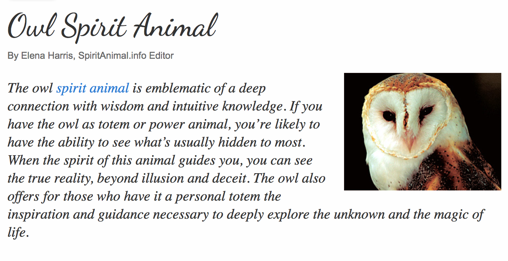

Welcome to My Page!
A Bit About Me: At the moment, my technical and design strengths lie mostly with image/theme creation and video editing. I have had a lot of fun using these mediums to tell stories in the past, and I am always looking to expand my storytelling horizons! I hope that IML 400 will give me the tools I need to be able to bring my dreams to life on the web to the fullest possible extent. According to this spirit animal quiz, my spirit animal is the owl. :)
Explore!
(Navigate Around My Site by Clicking on the Images Below!)

Image Courtesy of clipartsign.com.